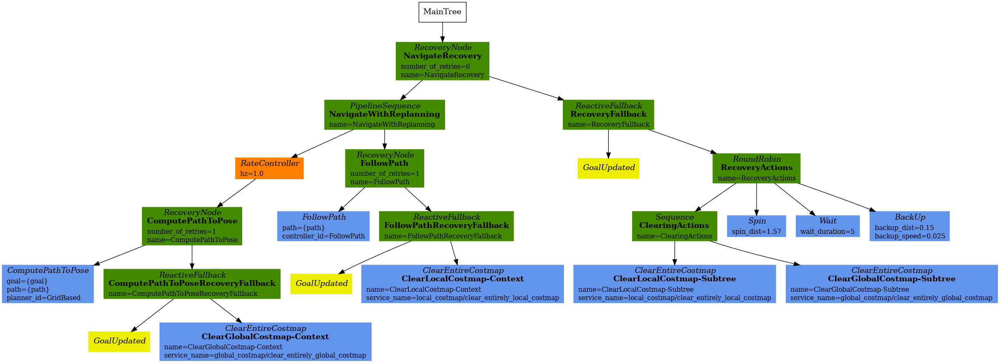
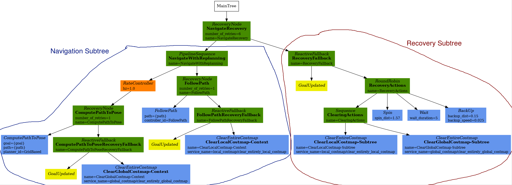
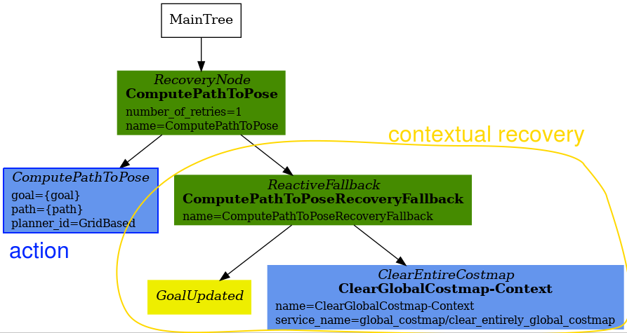

이 문서는 Nav2에서 사용되는 주요 행동 트리(BT)에 대한 참조 가이드 역할을 합니다.
nav2_bt_navigator/behavior_trees에 많은 예제 행동 트리가 제공되어 있지만, 이는 때때로 로봇의 응용 프로그램에 따라 재구성해야 할 수 있습니다. 다음 문서에서는 현재 기본 BT인 navigate_to_pose_w_replanning_and_recovery.xml을 매우 자세히 안내합니다.
이 안내를 계속 진행하기 전에 행동 트리의 개념에 익숙해지세요.
다음 섹션에서는 Nav2에서 현재 사용되는 주요 기본 BT인 navigate_to_pose_w_replanning_and_recovery.xml의 개념을 자세히 설명합니다. 이 행동 트리는 글로벌 경로를 주기적으로 1Hz로 재계획하며 복구 동작도 포함합니다.
BT는 주로 XML로 정의됩니다. 위에 표시된 트리는 XML로 다음과 같이 표현됩니다.
<root main_tree_to_execute="MainTree">
<BehaviorTree ID="MainTree">
<RecoveryNode number_of_retries="6" name="NavigateRecovery">
<PipelineSequence name="NavigateWithReplanning">
<RateController hz="1.0">
<RecoveryNode number_of_retries="1" name="ComputePathToPose">
<ComputePathToPose goal="{goal}" path="{path}" planner_id="GridBased"/>
<ReactiveFallback name="ComputePathToPoseRecoveryFallback">
<GoalUpdated/>
<ClearEntireCostmap name="ClearGlobalCostmap-Context" service_name="global_costmap/clear_entirely_global_costmap"/>
</ReactiveFallback>
</RecoveryNode>
</RateController>
<RecoveryNode number_of_retries="1" name="FollowPath">
<FollowPath path="{path}" controller_id="FollowPath"/>
<ReactiveFallback name="FollowPathRecoveryFallback">
<GoalUpdated/>
<ClearEntireCostmap name="ClearLocalCostmap-Context" service_name="local_costmap/clear_entirely_local_costmap"/>
</ReactiveFallback>
</RecoveryNode>
</PipelineSequence>
<ReactiveFallback name="RecoveryFallback">
<GoalUpdated/>
<RoundRobin name="RecoveryActions">
<Sequence name="ClearingActions">
<ClearEntireCostmap name="ClearLocalCostmap-Subtree" service_name="local_costmap/clear_entirely_local_costmap"/>
<ClearEntireCostmap name="ClearGlobalCostmap-Subtree" service_name="global_costmap/clear_entirely_global_costmap"/>
</Sequence>
<Spin spin_dist="1.57"/>
<Wait wait_duration="5"/>
<BackUp backup_dist="0.15" backup_speed="0.025"/>
</RoundRobin>
</ReactiveFallback>
</RecoveryNode>
</BehaviorTree>
</root>
이것은 여전히 다소 부담스러울 수 있지만, 이 트리는 두 개의 더 작은 서브트리로 나눌 수 있으며, 한 번에 하나씩 집중할 수 있습니다. 이 작은 서브트리는 최상위 RecoveryNode의 자식입니다. 여기서부터 NavigateWithReplanning 서브트리는 네비게이션 서브트리라고 하고, RecoveryFallback 서브트리는 복구 서브트리로 알려질 것입니다. 이는 다음과 같이 표현될 수 있습니다:
네비게이션 서브트리는 주로 실제 네비게이션 행동을 포함합니다:
복구 서브트리는 시스템 수준의 실패 또는 내부에서 쉽게 처리되지 않은 항목에 대한 행동을 포함합니다.
전체 BT는 (희망적으로) 대부분의 시간을 네비게이션 서브트리에서 보냅니다. 네비게이션 서브트리의 두 가지 주요 행동(경로 계산 또는 경로 따르기)이 실패하면 상황별 복구가 시도됩니다.
상황별 복구가 충분하지 않으면 네비게이션 서브트리는 FAILURE를 반환합니다. 시스템은 복구 서브트리로 이동하여 시스템 수준의 네비게이션 실패를 해결하려고 시도합니다.
이것은 상위 RecoveryNode의 number_of_retries(기본값은 6)를 초과할 때까지 발생합니다.
<RecoveryNode number_of_retries="6" name="NavigateRecovery">
이제 네비게이션 서브트리와 복구 서브트리 간의 제어 흐름을 살펴보았으니, 네비게이션 서브트리에 집중해 봅시다.
이 서브트리의 XML은 다음과 같습니다:
<PipelineSequence name="NavigateWithReplanning">
<RateController hz="1.0">
<RecoveryNode number_of_retries="1" name="ComputePathToPose">
<ComputePathToPose goal="{goal}" path="{path}" planner_id="GridBased"/>
<ReactiveFallback name="ComputePathToPoseRecoveryFallback">
<GoalUpdated/>
<ClearEntireCostmap name="ClearGlobalCostmap-Context" service_name="global_costmap/clear_entirely_global_costmap"/>
</ReactiveFallback>
</RecoveryNode>
</RateController>
<RecoveryNode number_of_retries="1" name="FollowPath">
<FollowPath path="{path}" controller_id="FollowPath"/>
<ReactiveFallback name="FollowPathRecoveryFallback">
<GoalUpdated/>
<ClearEntireCostmap name="ClearLocalCostmap-Context" service_name="local_costmap/clear_entirely_local_costmap"/>
</ReactiveFallback>
</RecoveryNode>
</PipelineSequence>
이 서브트리는 ComputePathToPose와 FollowPath라는 두 가지 주요 행동을 가지고 있습니다. 이 두 행동 중 하나라도 실패하면 상황별로 실패를 해결하려고 시도합니다. 트리의 핵심은 하나의 상위 노드와 두 개의 자식 노드로 다음과 같이 표현될 수 있습니다:
상위 PipelineSequence 노드는 ComputePathToPose가 틱(tick)되도록 허용하고, 성공하면 FollowPath가 틱됩니다. FollowPath 서브트리가 틱되는 동안 ComputePathToPose 서브트리도 틱되며, 이는 로봇이 이동하면서 경로를 재계산할 수 있게 합니다.
ComputePathToPose와 FollowPath는 모두 동일한 일반 구조를 따릅니다:
아래는 ComputePathToPose 서브트리입니다:
상위 RecoveryNode는 행동과 상황별 복구 서브트리 간의 흐름을 제어합니다. ComputePathToPose와 FollowPath의 상황별 복구는 목표가 업데이트되었는지 확인하고 관련 코스트맵을 지우는 작업을 포함합니다.
애플리케이션이 시스템 수준 복구로 넘어가기 전에 더 많은 상황별 복구 시도를 견딜 수 있다면 상위 RecoveryNode 제어 노드의 number_of_retries 매개변수를 변경하는 것을 고려하세요.
ComputePathToPose와 FollowPath의 BT 서브트리 간의 유일한 차이점은 아래에 설명되어 있습니다:
RateController는 ComputePathToPose 서브트리를 장식하여 지정된 주기로 계획을 유지합니다. 이 BT의 기본 주기는 1Hz입니다. 이는 BT가 트리 업데이트 속도(100Hz)에서 너무 많은 불필요한 요청으로 계획 서버를 과부하시키는 것을 방지하기 위함입니다. 애플리케이션과 경로 계산의 계산 비용에 따라 이 주기를 더 높거나 낮게 변경하는 것을 고려하세요. RateController 대신 사용할 수 있는 다른 데코레이터도 있습니다. 적절하다면 SpeedController 또는 DistanceController 데코레이터를 사용하는 것을 고려하세요.
복구 서브트리는 Nav2 기본 navigate_to_pose_w_replanning_and_recovery.xml 트리의 두 번째 큰 "반쪽"입니다. 간단히 말해, 이 서브트리는 네비게이션 서브트리가 FAILURE를 반환할 때 트리거되며, 네비게이션 서브트리의 상황별 복구가 충분하지 않은 경우 시스템 수준에서 복구를 제어합니다.
그리고 XML 조각:
<ReactiveFallback name="RecoveryFallback">
<GoalUpdated/>
<RoundRobin name="RecoveryActions">
<Sequence name="ClearingActions">
<ClearEntireCostmap name="ClearLocalCostmap-Subtree" service_name="local_costmap/clear_entirely_local_costmap"/>
<ClearEntireCostmap name="ClearGlobalCostmap-Subtree" service_name="global_costmap/clear_entirely_global_costmap"/>
</Sequence>
<Spin spin_dist="1.57"/>
<Wait wait_duration="5"/>
<BackUp backup_dist="0.15" backup_speed="0.025"/>
</RoundRobin>
</ReactiveFallback>
최상위 상위 노드인 ReactiveFallback은 나머지 시스템 전체 복구와 비동기적으로 새로운 목표가 수신되었는지 확인하는 흐름을 제어합니다. 목표가 업데이트되면 이 서브트리는 모든 자식을 중지하고 SUCCESS를 반환합니다. 이는 새로운 목표에 빠르게 반응하고 현재 실행 중인 복구를 선점할 수 있게 합니다. 이는 네비게이션 서브트리의 상황별 복구 부분과 유사해야 합니다. 이는 "이 조건이 발생하지 않는 한, 행동 A를 수행하라"는 상황을 처리하는 일반적인 BT 패턴입니다.
이러한 조건 노드는 매우 강력할 수 있으며 일반적으로 ReactiveFallback과 쌍을 이룹니다. 이 전체 navigate_to_pose_w_replanning_and_recovery 트리를 isBatteryLow 조건으로 ReactiveFallback에 감싸는 것을 쉽게 상상할 수 있습니다. 즉, 배터리가 낮아지지 않는 한 navigate_to_pose_w_replanning_and_recovery 트리가 실행되고, 배터리가 낮아지면 충전을 위해 도킹하는 다른 서브트리로 들어갑니다.
목표가 업데이트되지 않으면 행동 트리는 RoundRobin 노드로 진행됩니다. BT의 기본 4가지 시스템 수준 복구는 다음과 같습니다:
상위 RoundRobin의 네 자식 중 하나라도 SUCCESS를 반환하면 로봇은 네비게이션 서브트리에서 다시 네비게이션을 시도합니다. 이 재네비게이션이 성공하지 못하면 RoundRobin의 다음 자식이 틱됩니다.
예를 들어, 로봇이 멈췄고 네비게이션 서브트리가 FAILURE를 반환했다고 가정해 봅시다(이 예에서는 목표가 업데이트되지 않는다고 가정합니다):
이 가상의 시나리오에서 BackUp 행동이 로봇이 네비게이션 서브트리에서 성공적으로 네비게이션할 수 있게 했고, 로봇이 목표에 도달했다고 가정합시다. 이 경우 전체 BT는 여전히 SUCCESS를 반환합니다.
BackUp 행동이 로봇을 풀어주는 데 충분하지 않았다면, 위의 논리는 네비게이션 서브트리와 복구 서브트리의 상위 number_of_retries를 초과하거나 복구 서브트리의 모든 시스템 전체 복구가 FAILURE를 반환할 때까지(이는 드물며 다른 시스템 실패를 가리킬 가능성이 높음) 무한히 진행됩니다.